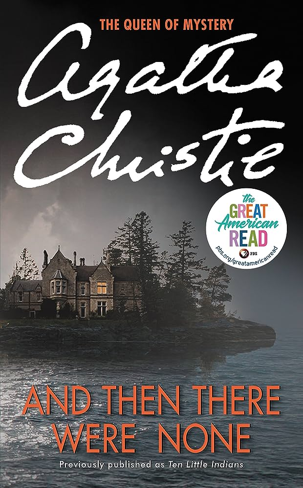

 "And Then There Were None" is a gripping and suspenseful masterpiece by Agatha Christie that will keep readers on the edge of their seats from beginning to end. With its clever plot twists and intricate storytelling, Christie proves once again why she is the queen of crime fiction. The book follows ten strangers who find themselves trapped on an isolated island, where they are mysteriously murdered one by one. The suspense builds as the characters' secrets are revealed, leaving readers guessing until the very last page. Christie's masterful writing and brilliant character development make "And Then There Were None" a must-read for any mystery lover.